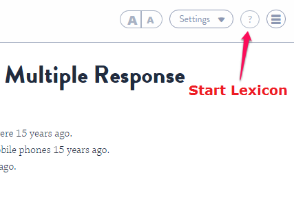

The Codio Lexikon is an integrated help system that lets users lookup information on a variety of languages and topics quickly and easily. Having access to concise reference information as new topics are learned is extremely useful and saves having to search the web and separate the wheat from the chaff!
The Lexikon is organized into Topics. We currently have added:
- Crunch
- CSS
- HTML
- Javascript
- Linux
However, we can easily add coverage for any other Topic. If you are interested in additional topics, please email help@codio.com.

Using the Lexikon with guide content
To make accessing the Lexikon from your content even easier, we have a Global Option in the Guide settings that lets you specify the default topic to select. If you use this option, an icon will appear in the toolbar that will load the Lexikon window with the selected topic automatically selected.
Click the Settings button, then select the Global tab. You can then specify the Topic name in the available field.
To see what topics are available, bring up the Lexikon from the Tools menu. The available topics are shown in the dropdown list.
Once you have specified a Lexikon topic, the student will see an icon in the Guide toolbar. When they press this, the Lexikon will appear in the same panel as the Guide with the correct topic automatically selected.
